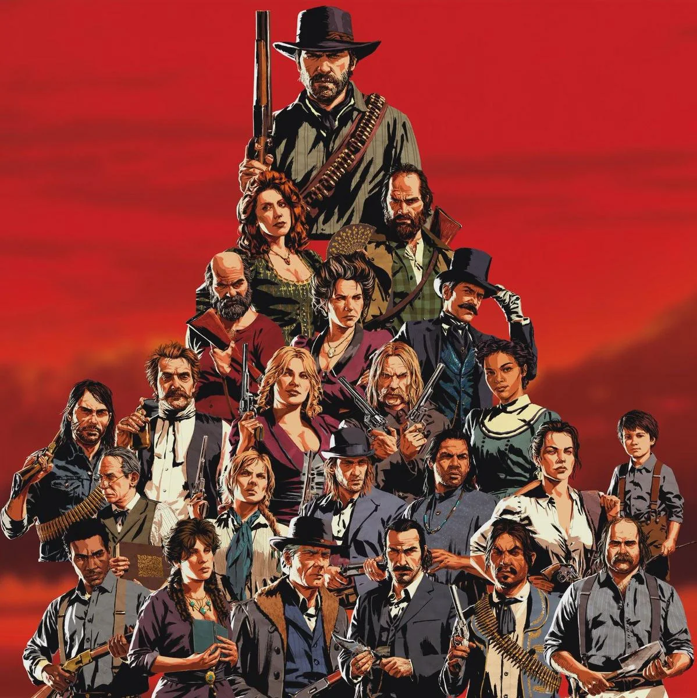
Gangue Van Der Linde
Nesta página você pode conferir um breve reusumo de todos os Membros da Gangue Van Der Line!

Nesta página você pode conferir um breve reusumo de todos os Membros da Gangue Van Der Line!
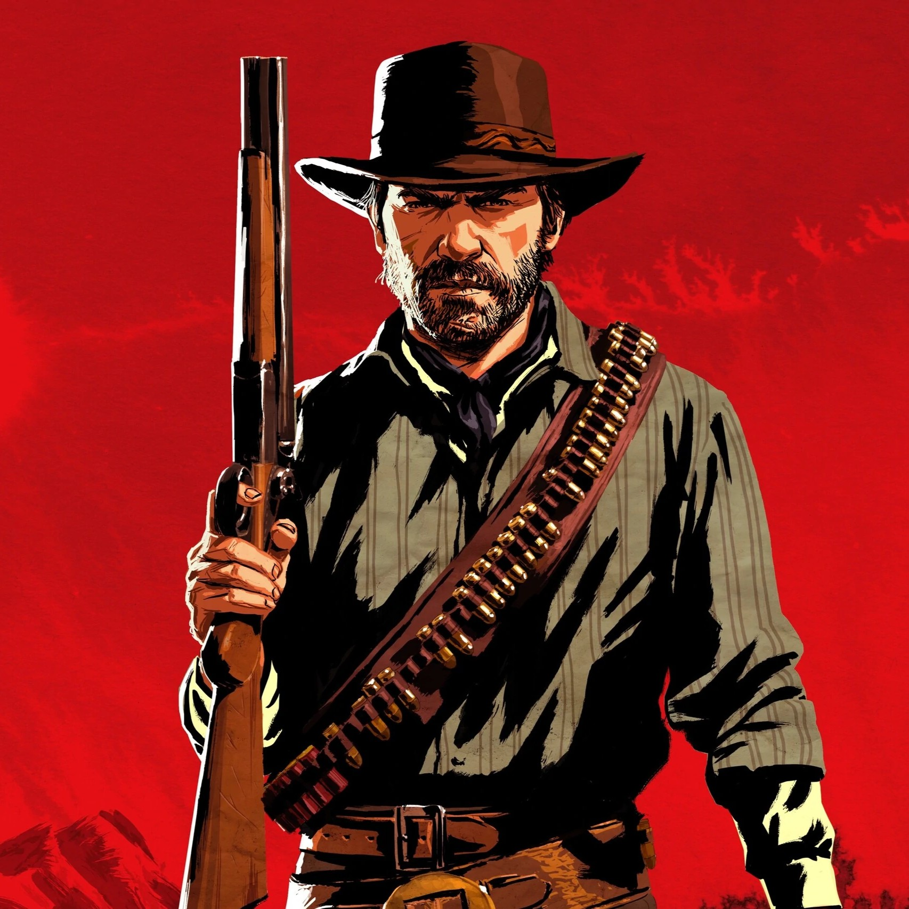
Arthur Morgan é o braço direito e executor da gangue. Sob a casca de homem durão, possui um forte código de honra e busca redenção ao notar o declínio de seu líder.
Jogar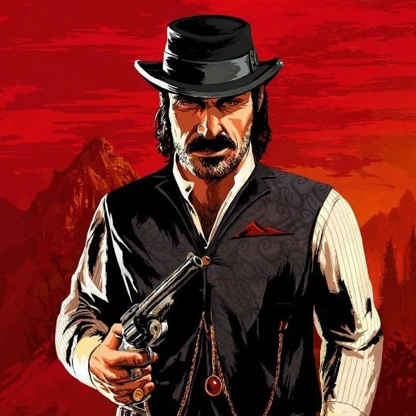
Dutch Van der Linde é o líder fundador carismático e idealista. Sua obsessão pela liberdade e a pressão da lei o tornam manipulador, paranoico e cruel.
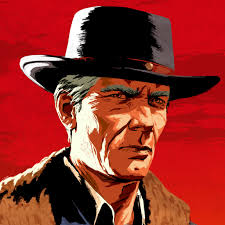
Hosea Matthews é o cofundador do grupo e o melhor amigo de Dutch. Sábio e estrategista, ele atua como a voz da razão e a única âncora moral que evita o caos total.

Lepold Strauss é um imigrante austríaco responsável pelas finanças e pela contabilidade da gangue. Ele opera um sistema cruel de agiotagem que Arthur é forçado a cobrar.
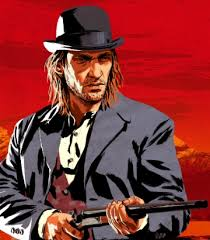
Sean MacGuire é um jovem pistoleiro irlandês muito falador, barulhento e otimista, que sempre tenta provar seu valor nos assaltos.
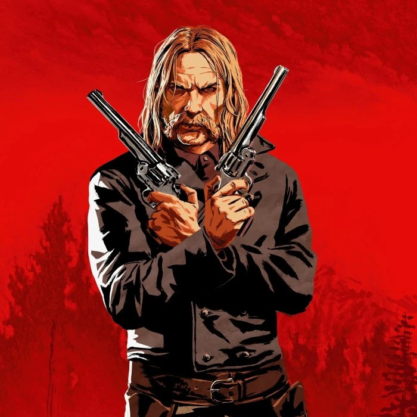
Micah Bell é um pistoleiro imprevisível, agressivo e egoísta. Ele se juntou à gangue recentemente e serve como um dos principais estopins para o caos interno do grupo.

Simon Pearson é o cozinheiro oficial da gangue. Ele é um ex-marinheiro da marinha que prepara as refeições diárias e gerencia as carcaças e peles trazidas pelos caçadores.
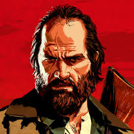
Bill Willianson é um ex-soldado do exército dispensado por má conduta. Ele é violento, pavio curto e dedicado a Dutch, embora seja frequentemente provocado pelos outros por não ser muito brilhante.
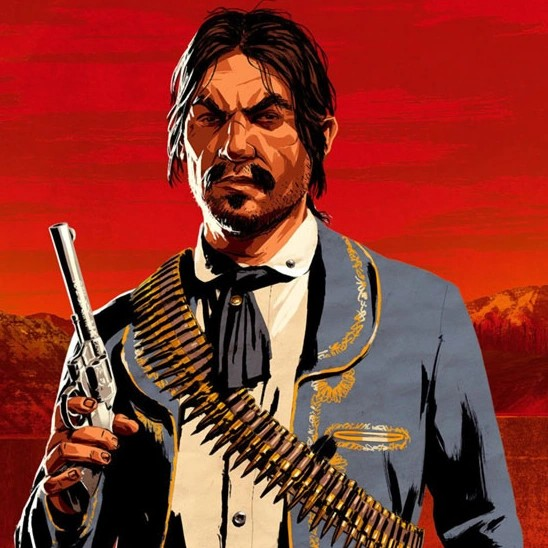
Javier Escuella é um revolucionário mexicano que fugiu de seu país natal. É um combatente habilidoso, toca violão no acampamento e possui uma lealdade inabalável a Dutch.
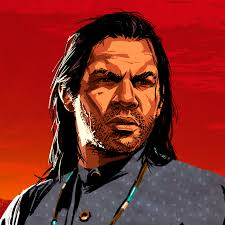
Charles Smith é um caçador e rastreador extremamente habilidoso, de origem indígena e negra. É calmo, reservado, altamente moral e um dos combatentes mais fortes do grupo.
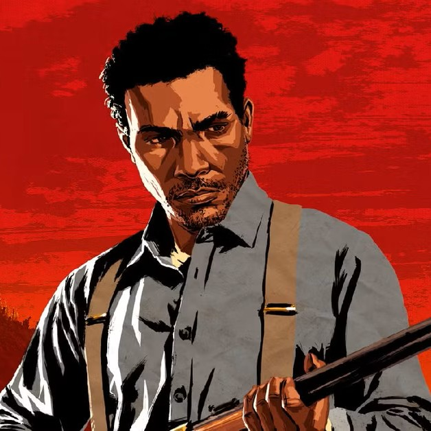
Lenny Summers é um dos membros mais jovens da gangue. Apesar da pouca idade, é extremamente inteligente, educado e um atirador competente, tornando-se um grande amigo de Arthur.
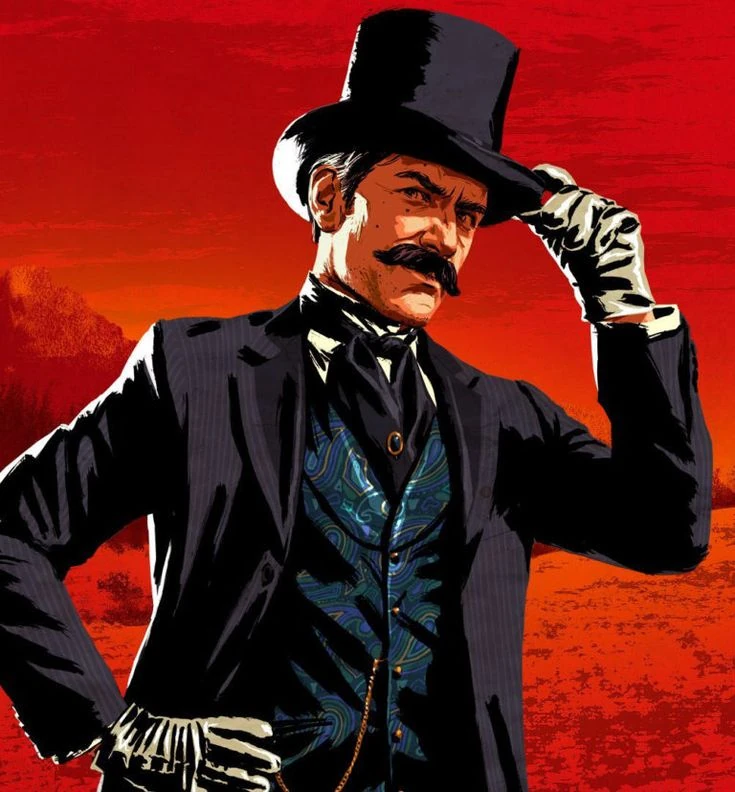
Josiah Trelawny é um mágico e vigarista extravagante. Ele não mora no acampamento e desaparece por longos períodos, mas sempre retorna com informações valiosas sobre grandes roubos.

Reverendo Swanson é um ex-clérigo que perdeu sua fé e caiu no vício em álcool e morfina. Ele é grato a Dutch por ter sido acolhido quando não tinha mais nada.

Uncle (Tio) é um dos membros mais velhos do acampamento. Ele é notoriamente preguiçoso, passa a maior parte do tempo bebendo e inventando desculpas (como sua suposta doença, a "lumbago") para não trabalhar.
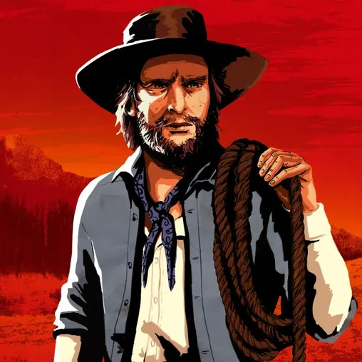
Keiran Duffy era um ex-O'Driscoll capturado por Arthur que ganhou a confiança da gangue Van der Linde após salvar a vida de Morgan. Ele virou o cavalariço do grupo, mas acabou recapturado por sua antiga gangue.
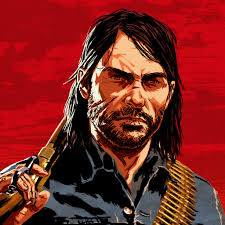
Jonathan Marston cresceu na gangue como um protegido, mas vive dividido entre o crime e a família. É um sobrevivente que tenta desesperadamente abandonar o passado para proteger a esposa e o filho.
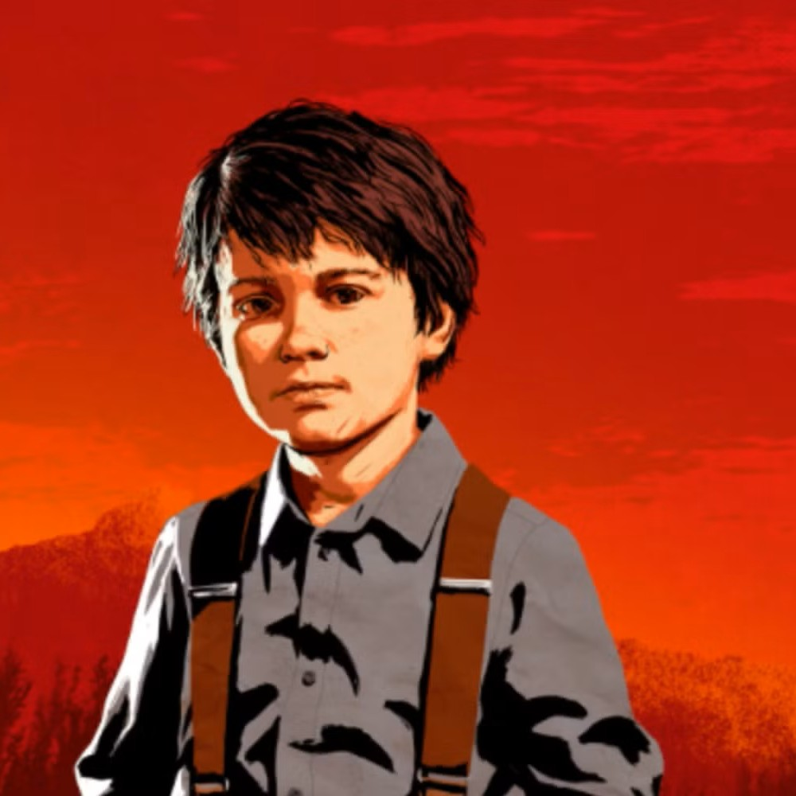
Jack é o filho pequeno de John e Abigail. Ele é criado de forma coletiva por todos os membros e representa a inocência no meio do acampamento.
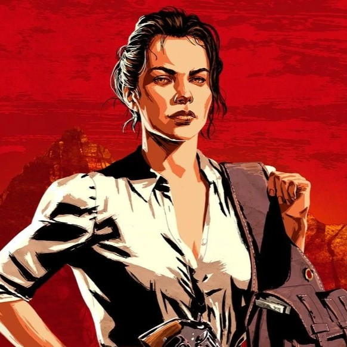
Abigail Roberts é a companheira amorosa de John Marston e mãe de Jack. Ela faz de tudo para proteger seu filho e deseja que John abandone a vida de crimes.
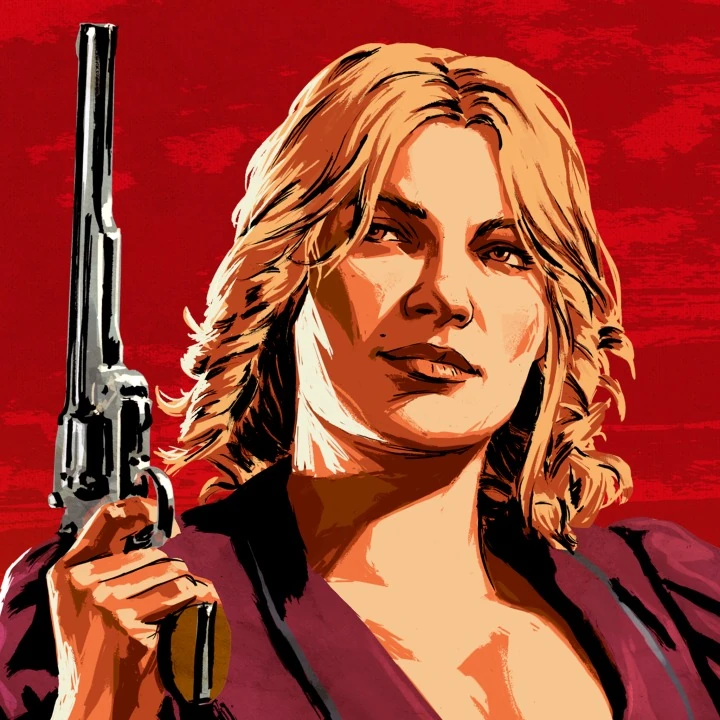
Karen Jones é uma golpista habilidosa e ótima atiradora que adora a vida fora da lei, mas recorre ao alcoolismo conforme a situação do grupo piora.
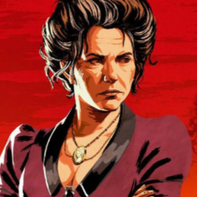
Susan Grimshaw é a governanta e autoridade máxima dentro do acampamento. Ela dita as regras, mantém a ordem, gerencia os suprimentos e garante que todos trabalhem e contribuam para o caixa.
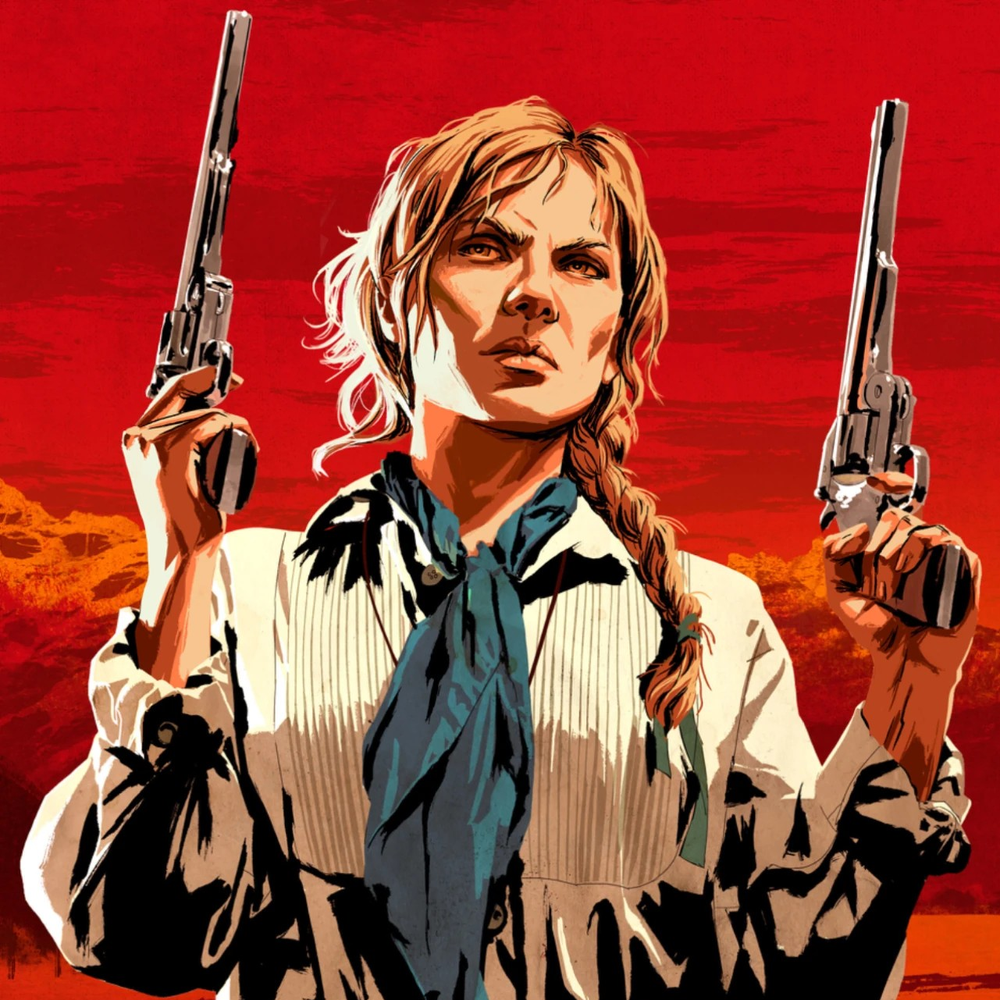
Sadie Adler é uma viúva resgatada pela gangue no início do jogo. Ao longo da trama, ela se transforma em uma pistoleira implacável, destemida e extremamente leal a Arthur.
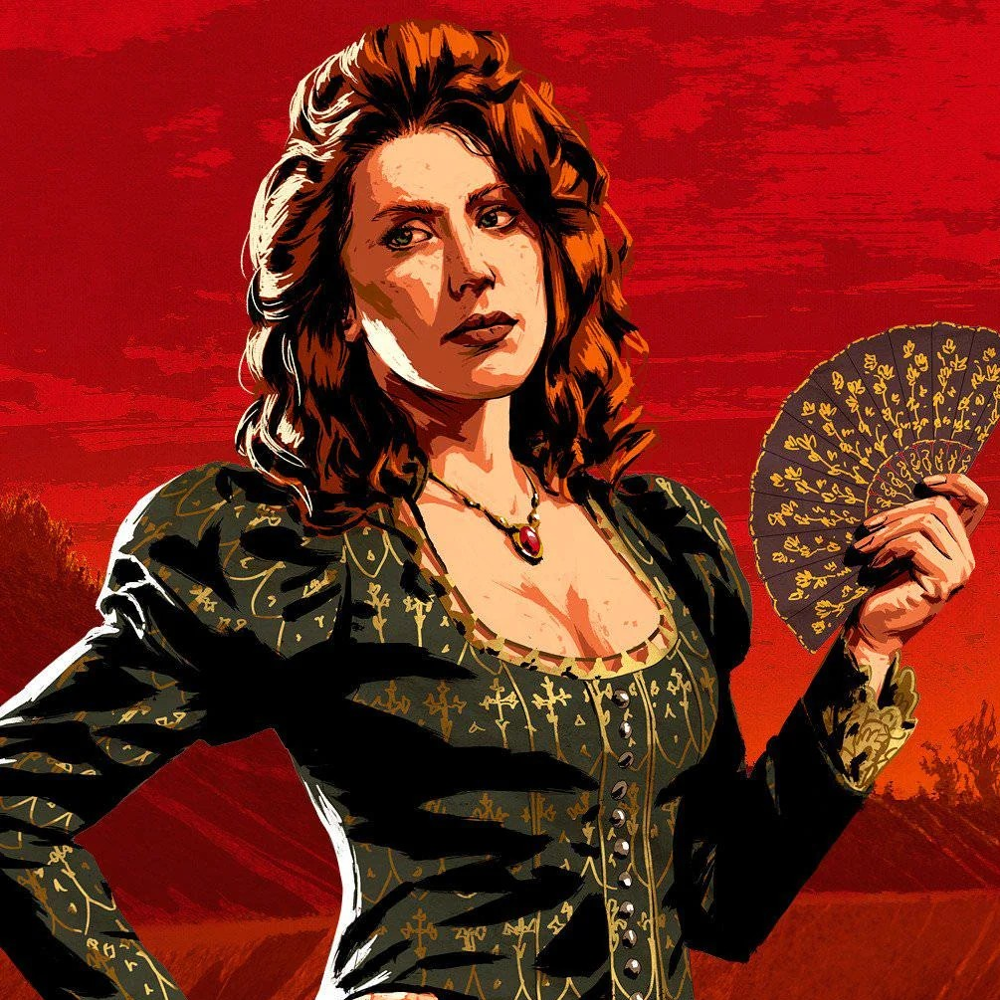
Molly O'Shea é a companheira amorosa de Dutch no início do jogo. Vinda de uma família rica da Irlanda, ela se sente deslocada e ignorada pela gangue conforme Dutch se afasta dela.
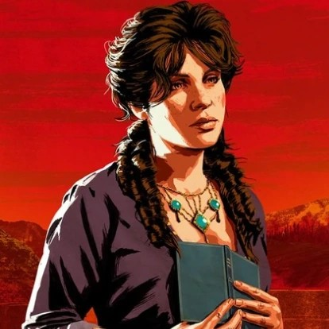
Mary-Beth Gaskill é uma jovem e gentil ladra de carteiras. Ela passa o tempo lendo e escrevendo romances, agindo com empatia com os outros membros.
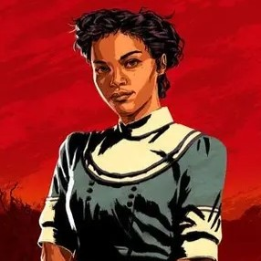
Tilly Jackson é uma jovem que fugiu de uma gangue rival no passado. Ela ajuda nas tarefas diárias e é muito próxima de Mary-Beth e Abigail.